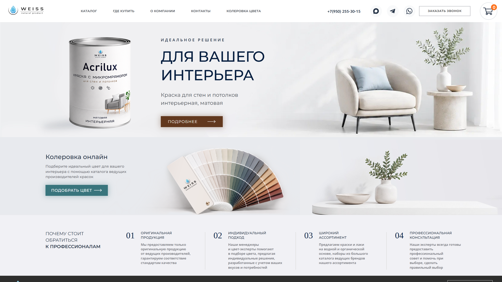
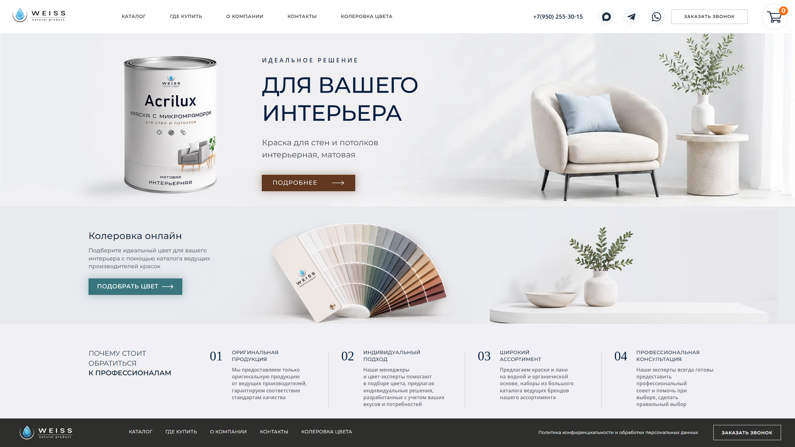
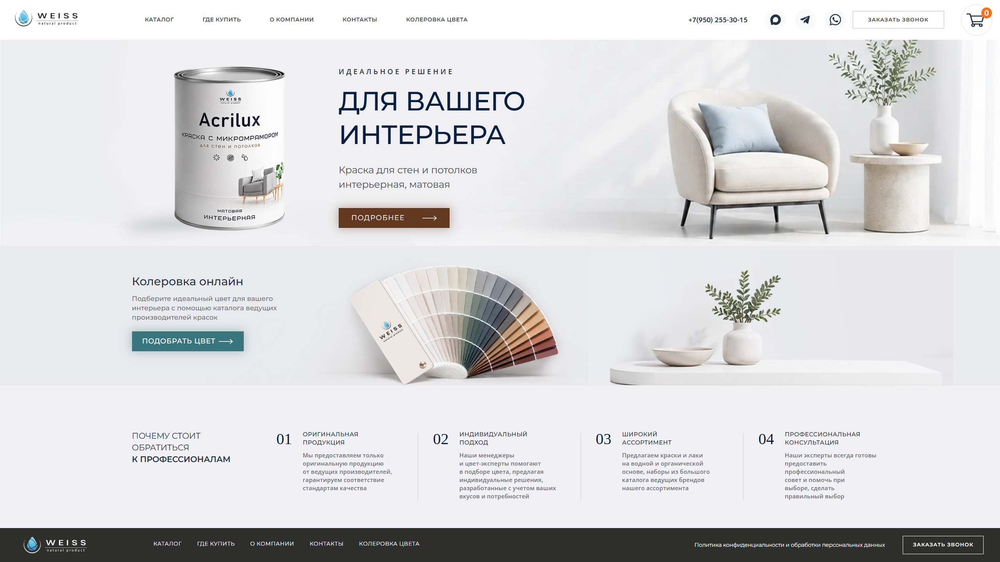
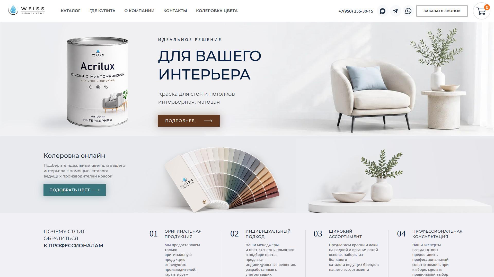
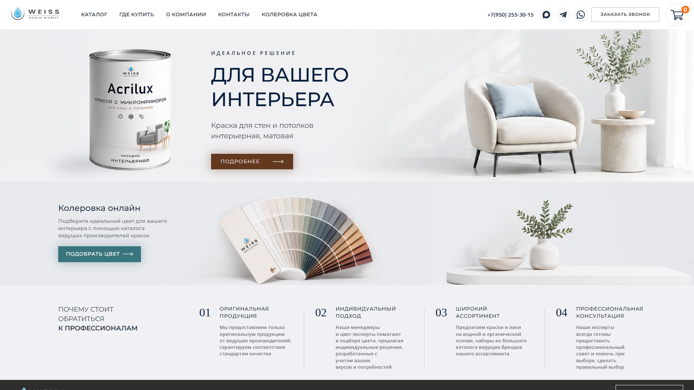
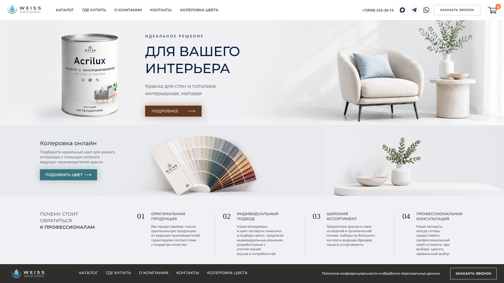

Главная страница, один и тот же код. Менялся только масштаб страницы — 1, 0.95 и 0.9. Сейчас на сайте стоит 0.9.
Снято 09.11.2026, Chrome, масштаб ОС 100%, без полосы прокрутки. Временная страница, будет удалена.
| Разрешение | Масштаб | Высота страницы | Первый экран |
|---|---|---|---|
| 2560×1440 | 1 | 1527 px | подвал ниже среза на 87 px |
| 2560×1440 | 0.95 | 1451 px | подвал срезан на 11 px |
| 2560×1440 | 0.9 | 1375 px | вся страница до подвала, 65 px воздуха |
| 1920×1080 | 1 | 1238 px | блок преимуществ срезан, подвал ниже на 158 px |
| 1920×1080 | 0.95 | 1139 px | подвал срезан на 59 px |
| 1920×1080 | 0.9 | 1079 px | вся страница до подвала, ровно в экран |
Размеры — в пикселях экрана, заголовок H1: 2560 — 560×190 / 532×181 / 504×171; 1920 — 420×143 / 399×136 / 378×129. Горизонтальной прокрутки нет ни в одном режиме.






Скриншоты кликабельны — открываются в полном размере 1:1. Страница служебная: в поиске не индексируется и после просмотра удаляется.